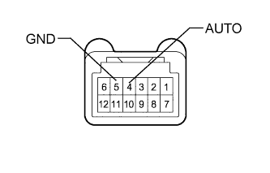

POWER WINDOW CONTROL SYSTEM > Rear Power Window RH Auto Up / Down Function does not Operate with Rear Power Window Switch RH |
| 1.CHECK FOR DTC |
Clear the DTCs (Click here).
Check for DTCs (Click here).
| Result | Proceed to |
| DTC is not output | A |
| DTC B2311 is output | B |
| DTC B2312 is output | C |
| DTC B2313 is output | D |
|
| ||||
|
| ||||
|
| ||||
| A | |
| 2.CHECK MANUAL UP/DOWN FUNCTION (REAR POWER WINDOW REGULATOR SWITCH ASSEMBLY RH) |
Check that the manual up/down function using the rear power window regulator switch can operate the rear power window regulator motor (Click here).
|
| ||||
| OK | |
| 3.READ VALUE USING INTELLIGENT TESTER (REAR POWER WINDOW REGULATOR SWITCH RH) |
Use the Data List to check if the power window regulator is functioning properly (Click here).
| Tester Display | Measurement Item/Range | Normal Condition | Diagnostic Note |
| RR Door P/W Auto SW | Rear power window RH auto up/down signal / ON or OFF | ON: Rear power window RH auto up/down switch operated OFF: Rear power window RH switch not operated | - |
|
| ||||
| OK | ||
| ||
| 4.INSPECT REAR POWER WINDOW REGULATOR SWITCH ASSEMBLY RH |
|  |
Remove the rear power window regulator switch (Click here).
Measure the resistance according to the value(s) in the table below.
| Tester Connection | Switch Condition | Specified Condition |
| 4 (AUTO) - 5 (GND) | Auto up/down operation | Below 1 Ω |
| 4 (AUTO) - 5 (GND) | Not operated | 10 kΩ or higher |
|
| ||||
| OK | |
| 5.CHECK HARNESS AND CONNECTOR (REAR POWER WINDOW REGULATOR SWITCH RH - REAR POWER WINDOW REGULATOR MOTOR RH AND BODY GROUND) |
Disconnect the L2 rear power window regulator switch connector.
Disconnect the L4 power window regulator motor connector.
Measure the resistance according to the value(s) in the table below.
| Tester Connection | Condition | Specified Condition |
| L2-4 (AUTO) - L4-4 (AUTO) | Always | Below 1 Ω |
| L2-5 (GND) - Body ground | Always | Below 1 Ω |
| L2-4 (AUTO) - Body ground | Always | 10 kΩ or higher |
|
| ||||
| OK | ||
| ||